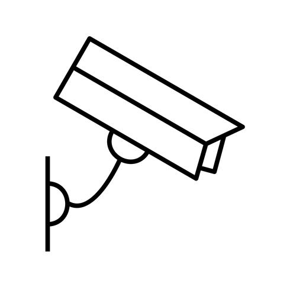
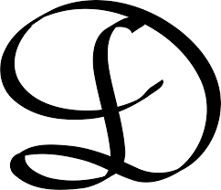
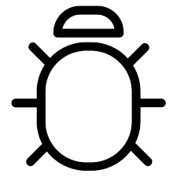
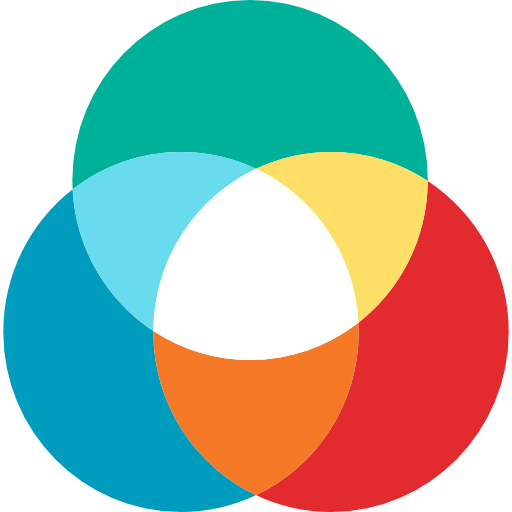

Vishwaak Chandran
Deep learning enthusiast •Developer•StudentI like to experiment and explore things
Here are few of my project. Click to explore them :)
A standalone application with the capability to analyis security Footage and to provide a better understanding of the information. With the help of Object tracking,sound source seperation and super resolutionGithub Repo
Form and Object tracking based application to estimate the fitness of vechicle.Github Repo
Hackathon project which was build as part of HackMIT 2020. A socail good application which intends to help the community by keeping a track of their mood and also helps to impriive it Github Repo
Malwaric: analyis the source code and the premission of a given application to decide if a given applicaiton is malicoues or not in nature.Github Repo
This study was conducted to compare the how CNN and the tradional ML algorthsm performes in a trival task like flower classification. Details of each was extracted from the image of the flower and used these features to classify them .Github Repo
An auto-encouder based application to decolourise a give image to see effective a Machine learning model are over the hard coded filtersGithub Repo
An RNN-LSTM based model which given the history of a persons chat, extracts the context of the chat and comes up with meaniful respose.Github Repo